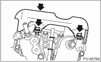
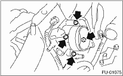
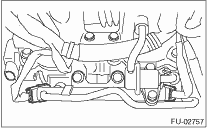
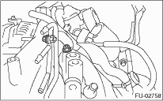
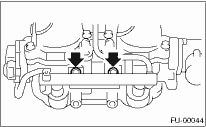
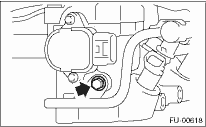
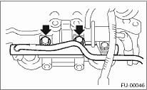
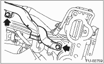
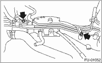

1. Remove the fuel pipe protector RH.

2. Remove the fuel pipe protector LH.

3. Remove the engine ground terminal from the intake manifold.


4. Disconnect the connector from the throttle position sensor (A), and the manifold pressure sensor (B).

5. Remove the throttle body from intake manifold.

6. Disconnect the connector from fuel injector.

7. Disconnect the connector from tumble generator valve actuator.

8. Disconnect the connector from tumble generator valve sensor.

9. Disconnect the connector from purge control solenoid valve.
10. Remove the purge control solenoid valve.

11. Disconnect the evaporation hose and purge valve from the intake manifold.

12. Remove the two bolts which hold fuel pipes on the left side of intake manifold.

13. Remove the bolt which holds fuel injector pipe onto intake manifold.
• LH side


• RH side


14. Remove the fuel injector.

15. Remove the harness bracket which holds the engine harness onto intake manifold.

16. Remove the engine harness from intake manifold.
17. Loosen the clamp which holds the front LH side fuel hose to injector pipe to remove the pipe from clamp.

18. Loosen the clamp which holds the RH side fuel hose to injector pipe to remove the pipe from clamp.

19. Remove the bolts which install fuel pipes on intake manifold.

20. Remove the fuel pipe assembly and pressure regulator from intake manifold.
21. Remove the intake duct from intake manifold.

22. Remove the tumble generator assembly from intake manifold.